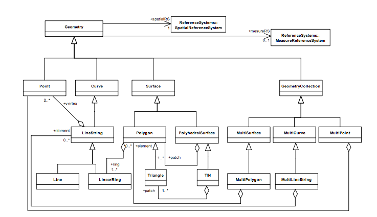

Projection
Standard Vector Data
Technical Documentation

What's in a Shapefile
Technical Documentation
- shp The actual geodata, in a special encoding
- shx An index file pointing to record offsets
- prj The Projection of the encoded data
- dbf A spreadsheet-like file that contains extra info for each geometry in the .shp file
Sources of Vector Data
TIGER/Lines at the census
Census FTP
Technical Documentation
Census Heirarchy
Natural Earth
NHGIS